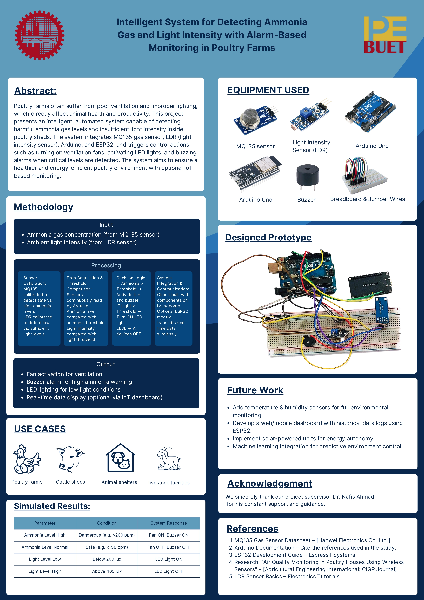

Conventional monitoring of smoke and light in environments such as storage units or workspaces lacks real-time feedback and cloud-based alerting. This may lead to delayed responses to fire, smoke, or abnormal darkness, risking safety and asset loss. A smart IoT-based monitoring system can solve these issues.
| Device / Sensor | Task / Function |
|---|---|
| MQ135 Smoke/Gas Sensor | Detects smoke and gas concentration (in PPM) |
| LDR (Light Dependent Resistor) | Measures ambient light intensity |
| Active Buzzer | Audible alarm on smoke detection |
| Arduino Uno | Reads sensors, triggers buzzer, sends data |
| ESP32 | Sends real-time sensor data to Firebase |
The system uses an MQ135 smoke sensor and LDR to constantly monitor smoke levels (in PPM) and light. When smoke crosses a set threshold, a buzzer sounds to alert people locally. All sensor readings are sent in real time to a Firebase cloud database via an ESP32.
A dashboard displays the last 10 readings, plots trends for both sensors, and helps monitor environmental status from anywhere. This early warning and monitoring is ideal for home, industry, or storage applications.

Gas Sensor (MQ135 + Buzzer):
const int smokeSensorPin = A0; // Analog pin connected to smoke sensor
const int buzzerPin = 8; // Digital pin connected to buzzer
const int threshold = 165; // Threshold ADC value
void setup() {
Serial.begin(9600); // Start Serial communication
pinMode(smokeSensorPin, INPUT);
pinMode(buzzerPin, OUTPUT);
}
void loop() {
int smokeValue = analogRead(smokeSensorPin); // Read from MQ sensor
Serial.print("Smoke ADC Value: ");
Serial.println(smokeValue); // Display the value in Serial Monitor
if (smokeValue > threshold) {
digitalWrite(buzzerPin, HIGH); // Turn buzzer ON
} else {
digitalWrite(buzzerPin, LOW); // Turn buzzer OFF
}
delay(500); // Optional: slight delay
}
Light Sensor (LDR):
const int ldrPin = A1; // LDR connected to A1
void setup() {
Serial.begin(9600);
pinMode(ldrPin, INPUT);
}
void loop() {
int lightValue = analogRead(ldrPin); // Read LDR analog value
Serial.print("LDR Light Value: ");
Serial.println(lightValue);
delay(1000); // Read every second
}